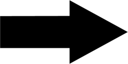

Trabalho de formatura supervisionado - MAC0499
Resumo:
Quando se pensa em arquitetura de redes para jogos
em geral considera-se a estrutura de cliente-servidor,
por funcionar melhor quando se trata de uma jogo via
internet e facilitar o suporte a mais jogadores conectados,
uma vez que uma máquina da rede alocará recursos apenas para
cuidar de dados comuns a todos os jogadores. Porém exige que
uma máquina disponibilize recursos para esse fim, o que para o
jogador representa uma preucupação desnecessária. Para eliminar
essa preucupação do lado jogador muitas vezes implementa-se
uma solução Peer-to-peer na qual todo jogador representa cliente
e servidor, ou seja, todo jogador guardar informações próprias e
também dos demais. Nesse trabalho pretendo propor uma solução P2P
e implementar um módulo em C#/Mono para uso com a popular engine
Unity 3D, uma vez que o módulo de rede implementado na mesma não
apresenta suporte a uma solução P2P.
Objetivos:
 Desenvolvimento de um protocolo de rede que
utilize a idéia de uma rede P2P para jogo multijogador
Definir como os jogadores se descobrirão
uns aos outros
Definir o que configura o estado de um jogador
(quantas vidas tem ou quantos pontos fez ou posição na tela, etc) e como guardá-lo, bem como outras informações dos host
que o jogador está usando.
Definir como os jogadores poderão saber se um usuário
não está mais conectado à rede.
Possibilitar ao usuário jogar partidas com um conjunto
determinado de jogadores conectados à rede.
Desenvolvimento de uma aplicação teste que utilize
o módulo em questão. A idéia inicial é um jogo de nave onde todos os jogadores estarão jogando de forma cooperativa contra
inimigos controlados pelo PC que aparecerão na tela, estilo space invaders. Essa idéia utilizará como base um jogo que fiz nas
minhas horas vagas no ano passado.
Trabalho já realizado:
Pequenos teste e implementação de módulos de rede que abrem
simples conexões para troca de informação entre duas máquinas numa mesma rede local dado um IP setado pelo usuário, tanto em UDP
quanto em TCP.
Definição de uma estrutura básica do protocolo (disponível neste documento, na seção 3 )
Cronograma:
| Atividade | Mar | Abr | Mai | Jun | Jul | Ago | Set | Out | Nov | Dez |
|---|---|---|---|---|---|---|---|---|---|---|
| Estudo sobre C#/Mono e comunicação de rede | ||||||||||
| Estudo sobre redes P2P em jogos | ||||||||||
| Desenvolvimento do protocolo | ||||||||||
| Implementação do protocolo | ||||||||||
| Implementação da aplicação de teste | ||||||||||
| Monografia e apresentação |